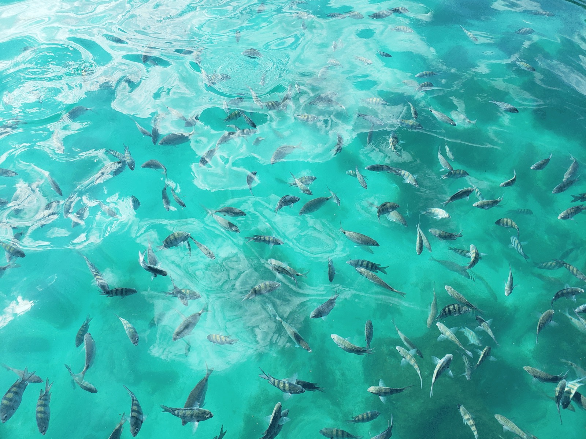
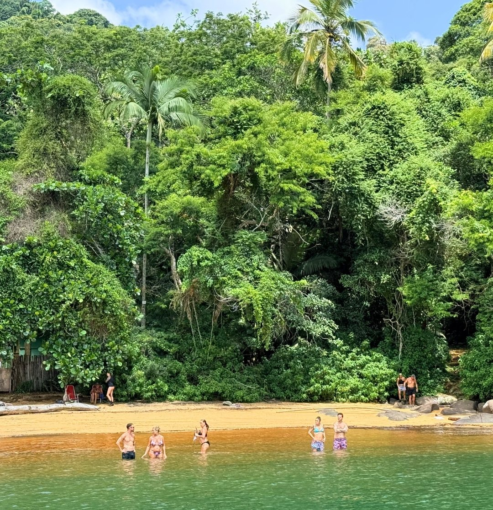
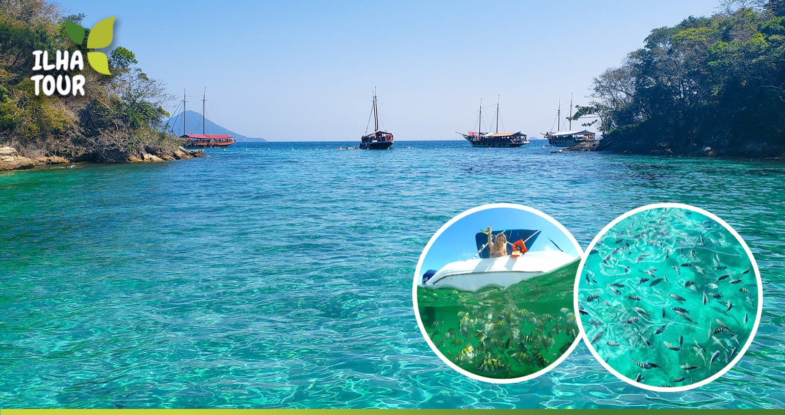
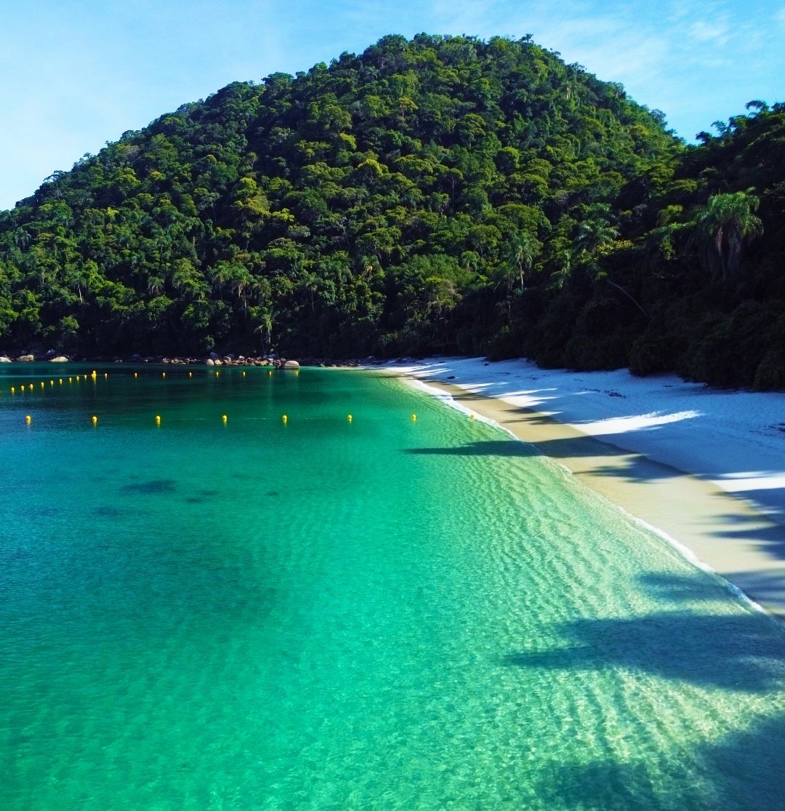
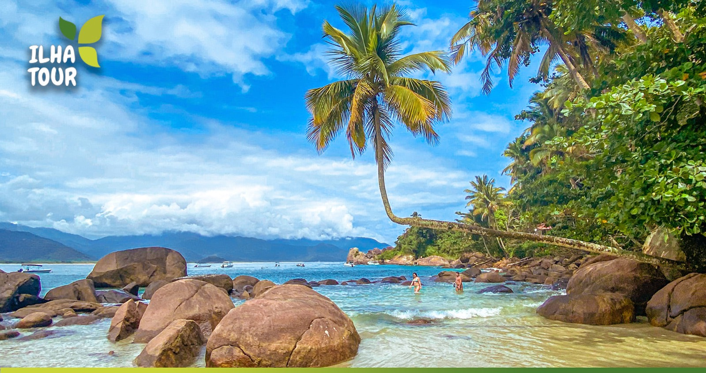
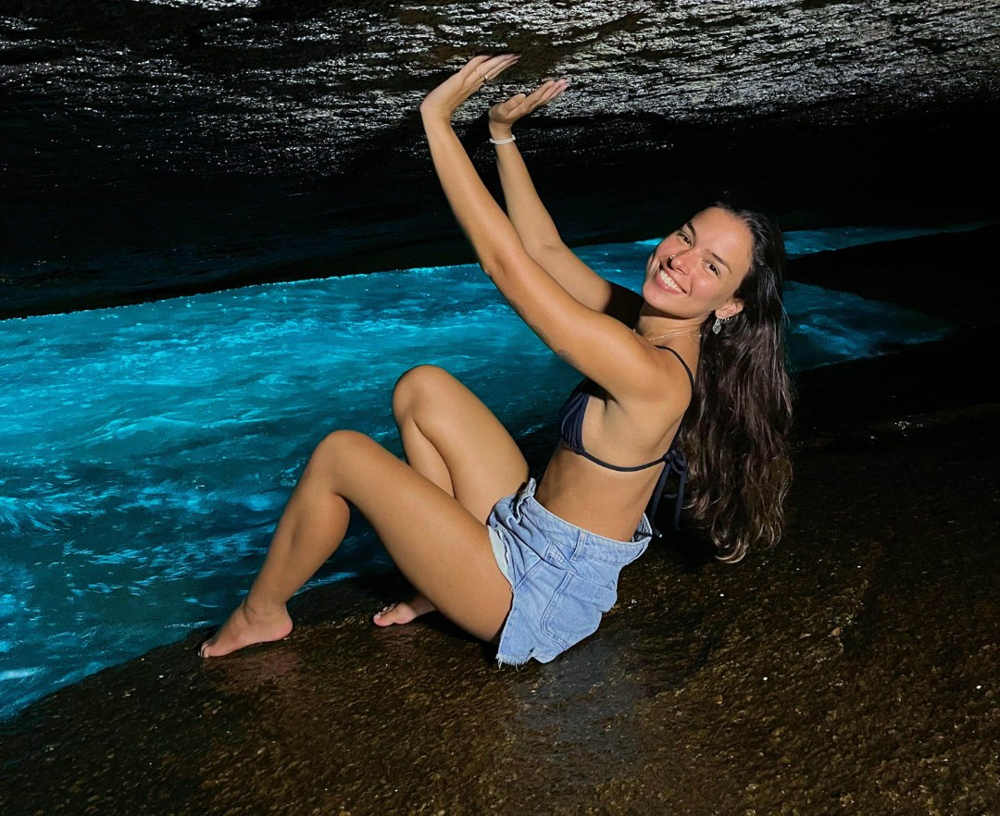

RUMO 090°

Ilha Tour 90°
Lagoa Azul e os pontos exclusivos da Costa Norte, fora do roteiro de todo mundo.
Ver roteiro
Praia dos Meros, Lagoa Verde e Araçatibinha: a combinação que só a Vou de Barco faz.
O Ilha Tour 210° é um roteiro compartilhado e autoral da Vou de Barco, pensado para quem quer fugir dos passeios mais tradicionais e conhecer um lado diferente da ilha. A navegação passa por pontos menos óbvios, combinando praia, lagoa, águas cristalinas e cantinhos especiais fora do circuito comum. O roteiro conta com paradas na Praia dos Meros, Lagoa Verde, Araçatibinha e um cantinho ainda pouco conhecido, escolhido pela nossa equipe pela beleza e exclusividade.
O roteiro pode sofrer alterações para a melhor experiência e a segurança a bordo.
Ideal para quem já conhece os clássicos de Ilha Grande e quer explorar praias diferentes, lagoas e águas cristalinas. Combina com casais, grupos de amigos e fotógrafos.

Lagoa Azul e os pontos exclusivos da Costa Norte, fora do roteiro de todo mundo.
Ver roteiro
Lagoa Azul, Lagoa Verde e as preferidas da Costa Norte, sobre águas tranquilas e cristalinas.
Ver roteiro
As ilhas mais desejadas de Angra: água cristalina, praias de cartão-postal e muito snorkel.
Ver roteiro

Um salão de pedra à beira-mar com água que parece brilhar, para quem já fez os clássicos.
Ver roteiro